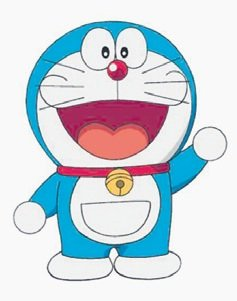

My Favourite Cartoon Character
Doraemon
Doraemon (Japanese: ドラえもん) is a fictional character in the Japanese manga and anime series of the same name created by Fujiko Fujio, the pen name of writing team Hiroshi Fujimoto and Motoo Abiko. He is a male robotic cat that travels back in time from the 22nd century to aid a preteen boy named Nobita. An "official" birth certificate for the character gives him a birth date of 3 September 2112 and lists his city of residency as Kawasaki, Kanagawa, the city where the manga was created.[3] In 2008, Japan's Foreign Ministry appointed Doraemon the country's "anime ambassador". His nickname is MS-903, Dora.